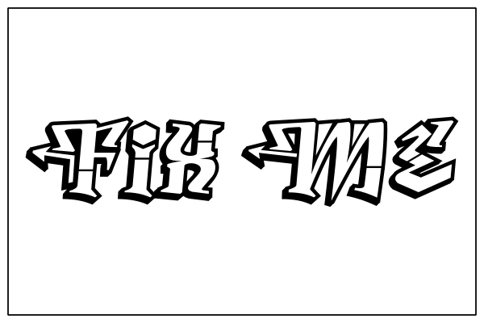

WebGIS with vector data using OpenLayers & GeoExt
Content
Content
- Introduction
- OpenLayers
- GeoExt
- Outlook
Introduction
About me
- developer @terrestris
- mainly JavaScript (recently also Java)
- book author
- core developer of OpenLayers
- one of the kickstarters of GeoExt 2

About terrestris
- based in Bonn, Germany
- top-notch WebGIS
- standards enthusiasts
- OpenSource / Free software
- development, training, consulting
About the talk
- OpenLayers is huge
- so is GeoExt
- highlights of both libraries
- ... all in relation to vector data
OpenLayers
Overview
- a very popular JavaScript library for web-maps
- OpenSource (BSD), © OSGeo
- long history (dating back to 2006)
- used in lots of important projects
- understands lots of formats
- provides a common API
Example

OpenLayers and vector data
- fetching
- displaying
- styling
- modifying
- persisting
fetching & reading vector data
- OpenLayers.Protocol
- WFS, HTTP, …
- OpenLayers.Format
- GML, KML, GeoJson, …
GeoExt
Overview
- rich web mapping interfaces
- extends Ext JS with spatial components
- OpenSource (BSD, exception from Sencha), © OSGeo
Example
GeoExt and vector data
- data components
- for grids
- for charts
- for trees
- form components
GeoExt and vector data
- UI enhancements
- vector legend
- column symbolizers
- print composition
- selection models
Outlook
OpenLayers 3
- WebGL
- performance
- file size
- better API-docs
GeoExt 2
- not too far from final
- chart interactions
- GeoExt next: OpenLayers 3 ?
Thank you
Imprint
←
→
/
#